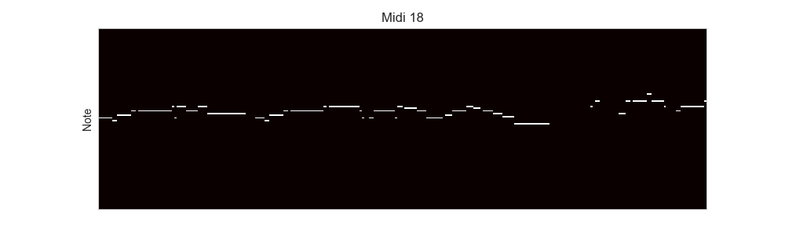
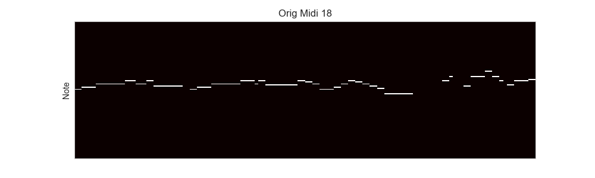
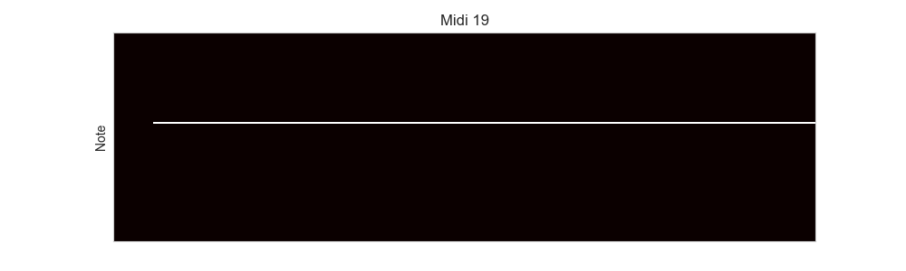
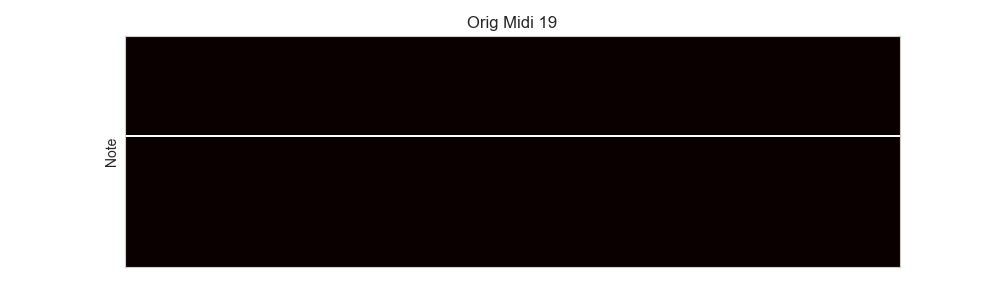
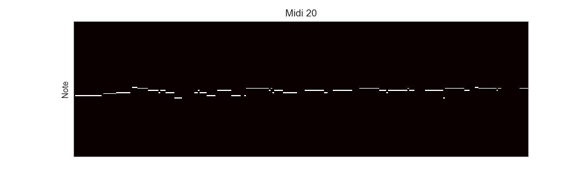
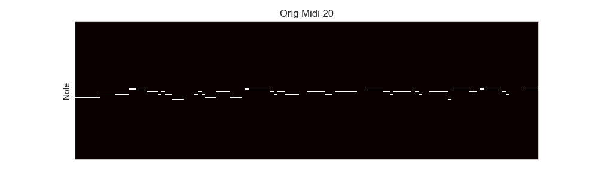
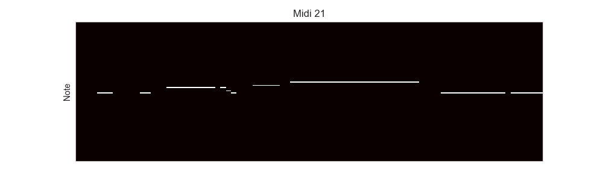
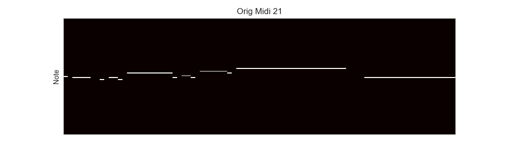

Welcome to the Pengun - Music Generation Project. This project focuses on leveraging Variational Autoencoders (VAEs) to create unique, customizable music. It is designed to provide users with a creative tool for generating musical compositions influenced by adjustable parameters like seed melodies, genres, and tempo. We aim to bring technology and music together, fostering creativity and innovation in the musical domain.
Explore our project artifacts, documentation, and sample MIDI files below.
This project uses Variational Autoencoders (VAEs) to generate unique musical compositions. Users can customize input parameters like seed melodies, genre, and tempo to influence the generated outputs. The system offers real-time previews and export options for MIDI or audio files.
The sample MIDI files and their corresponding visualizations demonstrate the transformative capabilities of our music generation model. Each pair of MIDI files and images showcases the original input and the generated output after passing through the Variational Autoencoder (VAE) model.
The original MIDI files (e.g., 18_orig.mid) represent the seed melodies or raw musical data that serve as inputs to the system. These inputs are processed through the VAE, which analyzes the input's features, such as pitch, rhythm, and harmony, and applies latent transformations to generate new musical compositions. The generated outputs (e.g., 18.mid) reflect the creative changes introduced by the model, such as variations in melody structure, tempo, and tonal dynamics.
The accompanying images provide a visual representation of the musical data in both its original and transformed states. These visualizations highlight key aspects of the music, such as:
By analyzing these visualizations, users can gain insights into how the model interprets and transforms musical features. This bridges the gap between the numerical data behind the music and the auditory experience it creates, providing a deeper understanding of the generative process.








All project source code and artifacts are available on GitHub.
{kind=link}
{kind=link}
{kind=link}
{kind=link}
{kind=link}
{kind=link}